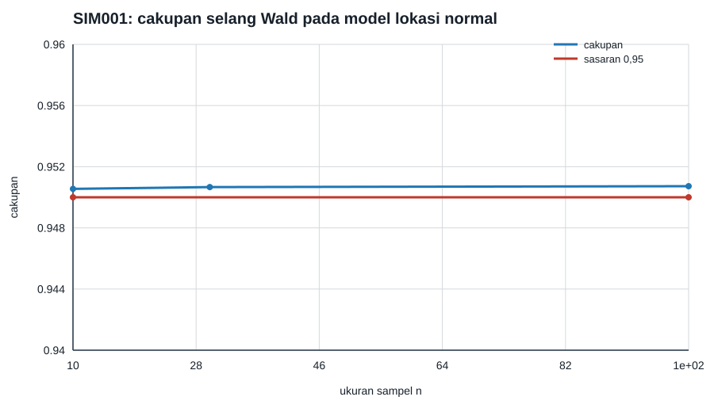

Model lokasi normal: MLE, coverage, dan tiga statistik uji
Eksperimen ini memakai \(X_1,\ldots,X_n\stackrel{\mathrm{iid}}{\sim}N(\mu,1)\) dengan nilai benar \(\mu=0\). MLE-nya adalah \(\widehat\mu=\overline X\), sehingga teori memberi \(E(\widehat\mu)=0\), \(\operatorname{Var}(\widehat\mu)=1/n\), dan interval 95% eksak \(\widehat\mu\pm1{,}9599639845/\sqrt n\). Model ini juga menjadi kasus khusus yang bersih untuk Model parametrik reguler, skor, dan informasi Fisher, Konsistensi MLE: identifikasi Kullback–Leibler dan teorema argmax, dan Prosedur Wald, skor, dan rasio likelihood: statistik Wald, score, dan dua kali selisih log-likelihood semuanya sama dengan \(n\widehat\mu^2\) untuk hipotesis \(H_0:\mu=0\).
Rancangan yang dapat direproduksi
- Seed PCG64:
140001. - Replikasi per ukuran sampel: 120.000.
- Ukuran sampel: \(n\in\{10,30,100\}\).
- Lingkungan terkunci: Python 3.13.9 dan NumPy 2.4.4.
- Tidak ada jaringan, data eksternal, atau proses browser.
Generator menyimpan bias, varians empiris, \(n\) kali varians, coverage, dan selisih maksimum ketiga statistik uji. Empat assertion wajib lulus: bias absolut di bawah 0,01; \(n\widehat{\operatorname{Var}}(\widehat\mu)\) berada di antara 0,97 dan 1,03; coverage berada di antara 0,945 dan 0,955; dan selisih numerik maksimum ketiga statistik yang dihitung dari setiap replikasi di bawah \(5\times10^{-14}\). Secara aljabar ketiganya identik; toleransi hanya menampung urutan operasi floating-point yang berbeda.
Hasil dan pembacaan
Untuk \(n=10,30,100\), coverage berturut-turut 0,950550; 0,950667; dan 0,950725. Nilai \(n\) kali varians empiris berturut-turut 1,000761; 0,999867; dan 0,993641. Hasil ini bukan bukti teorema, tetapi pemeriksaan terikat bahwa kode, penskalaan, dan prediksi analitis saling konsisten. Kesamaan persis statistik uji di sini tidak boleh digeneralisasi ke model nonkuadratik: pada model reguler umum ketiganya biasanya hanya ekuivalen secara asimtotik.

Data: CSV SIM001.